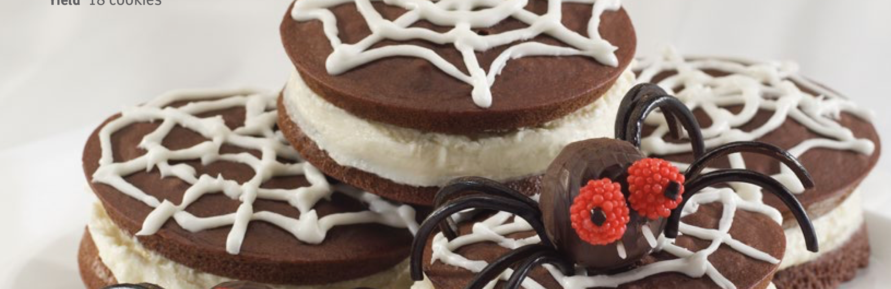

Spider Web Woopie Pies
- Prep time 1:15
- Bake time 0:12
- Yields 18 Pies
Ingredients
- 2cups + 4Tbs all-purpose flour
- 1⁄2 tsp baking soda
- 1 tsp cream of tartar
- 10 Tbs cocoa powder
- 1 cup granulated sugar
- 1 tsp salt
- 1 large egg
- 2 tsp vanilla
- 7 Tbs extract vegetable oil
- 1 1/2 cups buttermilk
Directions
- Preheat oven to 350°F.
- Line 2 to 3 cookie sheets with parchment paper and set aside.
- Sift together flour, baking soda, cream of tartar, cocoa powder, sugar, and salt and set aside.
- In another bowl whisk together eggs, vanilla, vegetable oil, and buttermilk. Add dry ingredients and using a firm spatula mix until combined and no flour is visible. Do not overmix as this will make the batter runny.
- Either use a piping bag fitted with a medium-sized plain tip or using a spoon, drop/pipe two tablespoon amounts onto prepared cookie sheets about 2 inches apart.
- Place in oven and bake until center of cakes bounce back when lightly pressed with a finger, about 12 minutes. Let cool.
- For buttercream: Beat butter until smooth and creamy, add powdered sugar, milk, vanilla, and salt and mix until light and fluffy.
- Pipe or spoon buttercream on one whoopie pie half and sandwich with another.
- For spider web icing, whip egg white and powdered sugar until light and thick. The icing can be adjusted by adding a small amount of egg white to make it thinner or powdered sugar to make it thicker.
- Fit icing in a little piping bag fitted with a very small plain tip and pipe a spider web on the surface and decorate with spiders.
- Make edible candy spiders to dress up the whoopie pies.
More Recipes